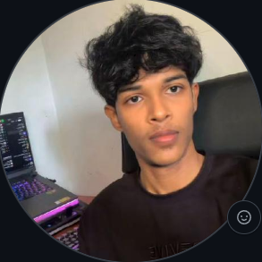
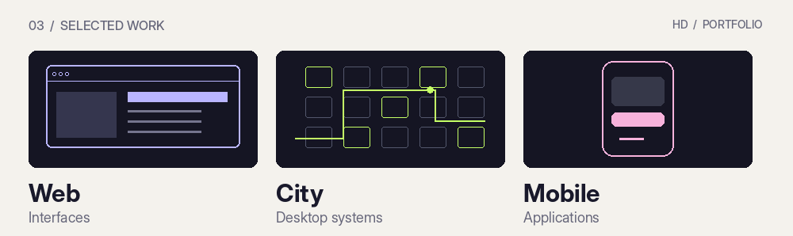
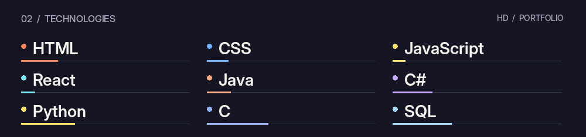
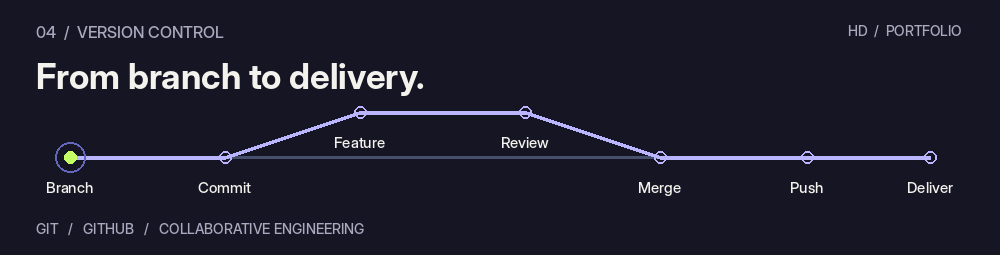

Websites
Responsive web interfaces and useful digital experiences.
INDEPENDENT DEVELOPER / SRI LANKA
Full Stack Developer
Design with intent. Build with purpose.
Creating digital experiences from interface to infrastructure.
I’m a Full Stack Developer passionate about building modern websites, desktop software and mobile applications. I care about clean interfaces, reliable code, structured data and thoughtful development workflows.

HASHITH / DEVELOPER
Responsive web interfaces and useful digital experiences.
A desktop application project focused on city management.
Exploring portable, intuitive software experiences.
HTML · CSS · JavaScript · React · Bootstrap
Java · C# · Python · C · Node.js · .NET
SQL · MySQL · SQL Server
Git · GitHub · VS Code · Visual Studio · Figma · IntelliJ IDEA · Linux · Unity

Git is a core part of my development workflow: version control, clear commit histories, branches, merges and collaboration.

My ambition is to build my own software development company and turn ideas into products that make a difference.
hashithdissanayaka@gmail.com ↗